Desde Tijuana, Purple AI pone la IA a trabajar en las empresas.
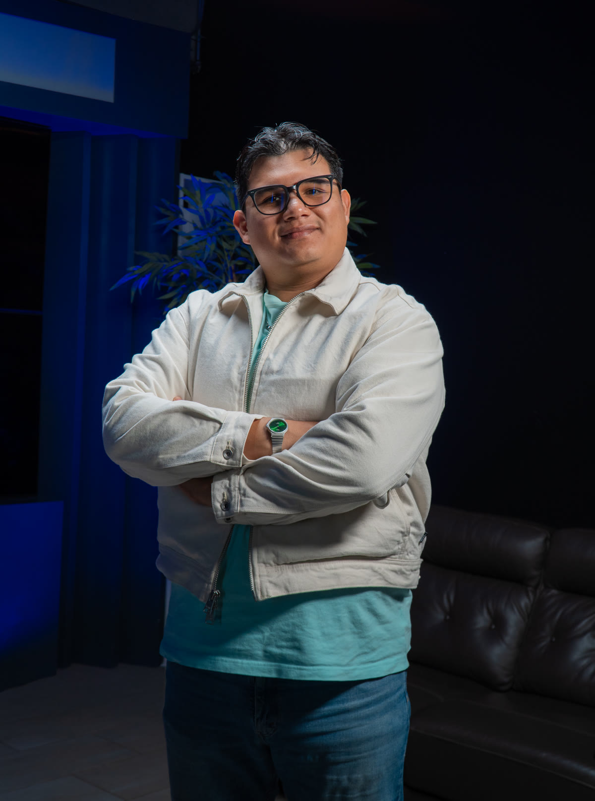
Andrés WongSocio fundador · Purple AI
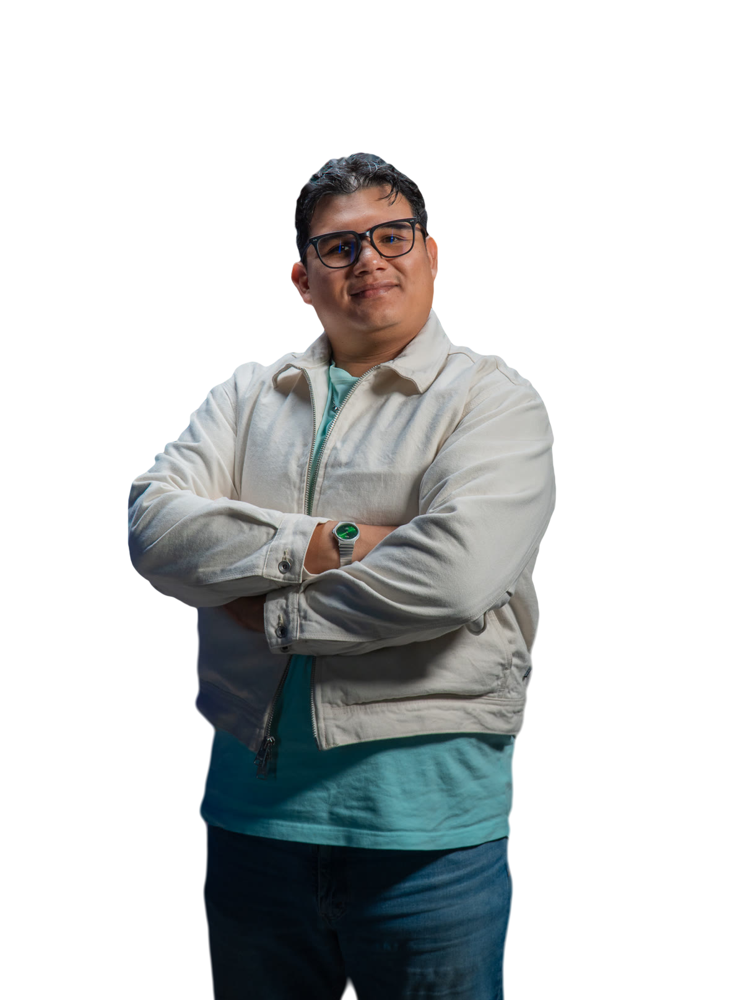
Pág.8
CiberseguridadOctubre negroFrancisco Olazo
Pág.21
ComunidadConstruyendo el ecosistemaChristian Picos
Pág.25
Mentor ALTILa IA y tu futuro profesionalAlfredo Sánchez
EdiciónNoviembre 2026
Hablemos TechVol. 03 — Noviembre 2026
Revista digital de Hablemos Tech · Vol. 03
Contenido de noviembre
03–05
Carta del fundador · Josué Madera
Hablemos de tecnología, pero hablemos juntos
Una revista para quienes hacen funcionar la tecnología en México. Josué Madera
08–10
Ciberseguridad · Francisco Olazo
Octubre negro
Responder con seriedad, calma y estrategia a las vulnerabilidades del mes. Francisco Olazo
12–13
Innovación regional · Crónica
Perspectivas Baja Innovation Day
Innovar en la región exige pasar de la intención a la ejecución gradual. Crónica
15–18
Ciberseguridad e IA · Andrés Wong
Catorce años invisible
La IA encontró los agujeros; el robo más grande no los necesitó. Andrés Wong
21–23
Comunidad · Christian Picos
Construyendo el ecosistema tecnológico de Baja California
El conocimiento existe. La conexión es el desafío. Christian Picos
25–27
Mentor ALTI · Alfredo Sánchez
La IA y el futuro de los profesionales de tecnología
No está en programar más, sino en resolver mejor. Mentor ALTI
29
En esta edición · Colaboradores
Quién escribe
Las voces de esta edición, y cómo sumarte a la siguiente. Colaboradores
Carta del fundador
Hablemos de tecnología, pero hablemos juntos.
Josué MaderaFundador, Hablemos Tech Director General, EnteraCloud
03Tercera edición Noviembre 2026
Carta del fundadorJosué Madera
Una revista para quienes hacen funcionar la tecnología en México, sin importar la industria.
Si trabajas en TI, sabes que tu labor rara vez se ve, pero todo depende de ella. No importa si estás en una empresa de logística, en un hospital, en una cadena de retail, en una agencia automotriz, en una marca de belleza, en un gimnasio o en una planta de producción. Cuando algo falla, todos voltean a verte. Cuando todo funciona, nadie pregunta por qué.
Esta revista es para ti.
En México se hace tecnología todos los días, en todas las industrias y en empresas de todos los tamaños. Aun así, durante mucho tiempo esa historia casi no se contaba, o se contaba desde afuera, con casos de otros países y realidades que poco se parecen a las nuestras.
Llevo años en la industria de la tecnología, y si algo he aprendido es que el talento nunca ha sido el problema. Lo que nos falta es conexión. Responsables de TI en sectores completamente distintos enfrentan los mismos retos (seguridad, presupuesto, nube, inteligencia artificial, falta de personal) sin haberse conocido nunca. De esa observación nació todo lo demás. Así surgió el Foro de Tecnología MX, donde
Carta del fundadorJosué Madera · Fundador de Hablemos Tech
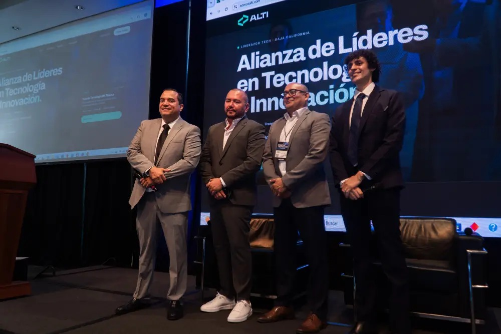
Foro de Tecnología MX, Tijuana
fabricantes, integradores, universidades y usuarios de tecnología se sientan en la misma mesa a hablar de lo que realmente está pasando en sus empresas.
Así nació ALTI, la Alianza de Líderes en Tecnología e Innovación, un espacio entre pares para quienes toman decisiones de TI, sin presentaciones comerciales de por medio. Con Mentor ALTI, ese conocimiento circula todos los meses, no solo en un evento al año.
Desde INDEX Zona Costa buscamos llevar la inteligencia artificial del discurso a la realidad de las empresas. Con Tech & Wine Fest confirmamos que las mejores conversaciones suceden cuando la gente baja la guardia. Y desde EnteraCloud y Purple AI vivo la operación diaria: los proyectos reales que a veces salen perfectos y a veces enseñan más cuando no.
Ninguno de estos esfuerzos es un proyecto suelto. Todos responden a una misma convicción: un país avanza más rápido cuando su comunidad tecnológica se conoce, colabora y comparte lo que sabe.
Esta revista es el siguiente paso de ese camino, y no es mía: es de ustedes. Si tienen un proyecto que contar, una lección aprendida o una pregunta que nadie se ha atrevido a hacer, este es su lugar. Escriban, propongan, cuestionen.
Carta del fundadorJosué Madera · Fundador de Hablemos Tech
En estas páginas van a encontrar
01Casos reales de empresas mexicanas de todos los sectores.
02Las voces de líderes de TI que están tomando decisiones difíciles.
03Tendencias aterrizadas a nuestra realidad, sin traducciones forzadas.
Bienvenidos a esta tercera edición. Bienvenidos a la conversación.
Hablemos tech.
“Ningún profesional de TI debería enfrentar solo sus decisiones, sin importar la industria en la que esté.”
Josué Madera · Fundador y Director Editorial de Hablemos Tech
Josué Madera.Impulsa comunidades que conectan a líderes, empresas y talento tecnológico en México.
Hablemos TechFundador y Director Editorial
ALTI · Alianza de Líderes en Tecnología e InnovaciónFundador
Foro de Tecnología MXFundador
INDEX Zona CostaDirector del Comité de TI
EnteraCloudDirector General
Purple AICofundador
Tech & Wine FestCreador
Octubre negro.
Responder con seriedad, calma y estrategia.
Francisco OlazoLATAM Lead Engineer, Enteracloud
Ciberseguridad
CiberseguridadOctubre negro · Francisco Olazo
Octubre nos recuerda que las vulnerabilidades pueden afectar tecnologías distintas y ampliamente utilizadas. El equipo de PHP publicó actualizaciones para corregir dos fallas críticas que permitían a un atacante ejecutar código en el servidor sin necesidad de usuario ni contraseña. La CISA, la agencia de ciberseguridad de Estados Unidos, reportó explotación activa y las incorporó a su catálogo KEV (Known Exploited Vulnerabilities): la lista de fallas que ya se están usando en ataques reales.
La referencia práctica para los administradores es revisar si esos productos están en su inventario y atender primero los que estén expuestos a internet o soporten servicios críticos.
¿Cuánto podría operar tu empresa sin estos sistemas?
Un parche también es un cambio operativo. En septiembre, una actualización dejó inestable el Escritorio remoto en algunos Windows Server: las aplicaciones seguían arriba, pero nadie podía entrar.
01
Cambio
Se instala el parche.
02
Acceso
Nadie puede iniciar sesión.
03
Operación detenida
Contpaqisin acceso
Nóminasin acceso
Logísticasin acceso
ERPsin acceso
Aduanassin acceso
CiberseguridadOctubre negro · Francisco Olazo
Una ruta práctica puede empezar así
Cinco pasos, en orden.
01
Confirmar el alcance
Revisar inventario, versiones, servicios expuestos y responsables.
02
Priorizar por riesgo
Combinar explotación confirmada, exposición a internet, criticidad del activo, impacto al negocio y si ya existe corrección.
03
Probar antes de ampliar
Validar en un grupo piloto que sigan funcionando el Escritorio remoto, las aplicaciones y los servicios críticos.
04
Remediar con control
Programar ventanas, respaldar y definir una ruta de recuperación si algo falla.
05
Verificar y comunicar
Confirmar que el parche se aplicó y reportar a la empresa el riesgo, las acciones, los responsables y los tiempos.
Las herramientas ayudan a convertir información dispersa en acciones: Greenbone · OpenVAS o Wazuh para descubrir vulnerabilidades, Datto RMM para desplegar parches por grupos y con aprobación, Ansible para remediar en muchos servidores a la vez. Ninguna reemplaza respaldos recientes ni otra forma de entrar a los servidores cuando el Escritorio remoto no está disponible.
La dirección estratégica no consiste en prometer que nada ocurrirá. Consiste en conocer los activos, reducir la exposición, asignar responsables y mantener informados a quienes dependen de la tecnología.
Un tablero con cientos de alertas no equivale a control.
Francisco Olazo · Octubre negro
Innovación regionalBaja Innovation Day
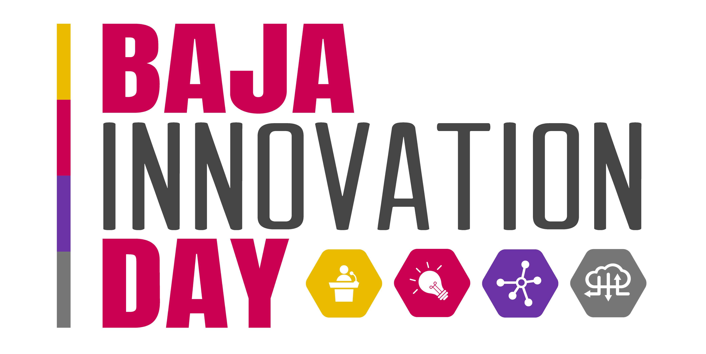
Innovación regional · CECUT, Tijuana · 15 oct 2026
Perspectivas Baja Innovation Day.
Integrar tecnología en una operación real rara vez fracasa por falta de herramientas: se complica por cómo se planea el cambio, qué tan conectada está la empresa con el talento local y cómo responde a las exigencias de su sector. Innovar en la región exige pasar de la intención a la ejecución gradual.
Al preguntar cuáles son las ideas erróneas más comunes de las empresas que buscan integrar tecnología o automatización, la respuesta apuntó a la ambición de querer transformar todo el sistema desde el primer día. Cuando una organización intenta automatizar su operación de golpe, sin estandarizar procesos ni dividir el proyecto en etapas, el esfuerzo suele traducirse en sobrecostos, retrasos y nuevos cuellos de botella. La clave está en avanzar por partes: ordenar primero la operación base y escalar paso a paso.
Esa búsqueda de competitividad también está cambiando la relación entre la industria y la academia. Representantes del CICESE (Centro de Investigación Científica y de Educación Superior de Ensenada) destacaron que, desde inicios de la década de 2010, ha crecido la apertura de las empresas de Baja California para desarrollar I+D propio y crear productos y servicios de mayor valor agregado.
Aunque aún se requiere mayor impulso, el CICESE y la UABC trabajan en llevar las soluciones del laboratorio a la planta productiva: México tiene capacidad científica local para resolver retos complejos sin depender siempre del extranjero.
Innovación regionalBaja Innovation Day
En el sector ganadero, el diagnóstico desde el agrotech —donde hoy se impulsa una plataforma de ganadería conectada, presente en 25 estados de México y siete países— fue claro: los pequeños productores suelen sentirse alejados del mundo digital. Para cerrar esa brecha se apuesta por aplicaciones gratuitas, tutoriales y capacitación que los conectan a la economía digital y equilibran la balanza frente a los grandes compradores.
En la industria maquiladora, el reto ambiental más crítico es el agua residual: las plantas no pueden descargarla contaminada. Desde Tijuana se presentó un sistema automatizado que combina sensores, lámpara UV y nanoburbujas de ozono para desinfectar vegetales y tratar el agua antes de su descarga.
Ganadería conectadaAgrotech para pequeños productores
25estados de México
7países
La transformación en la región avanza con pragmatismo:
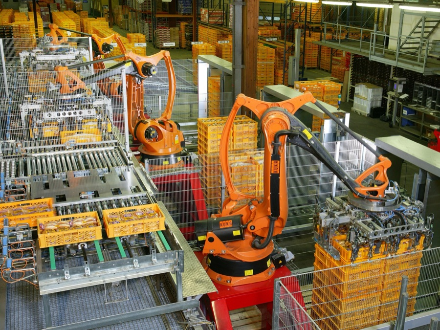
01Automatizar por fases
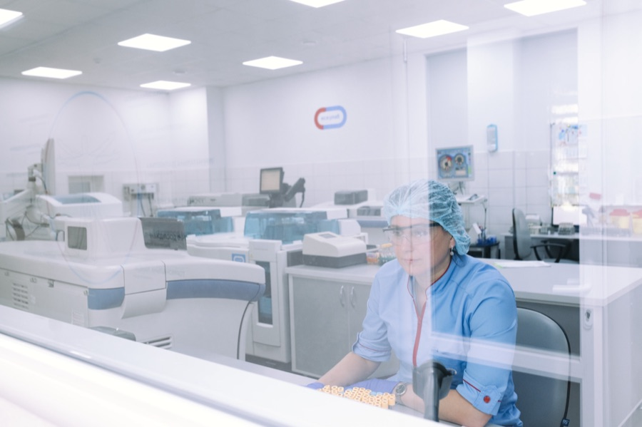
02Aprovechar la ciencia local
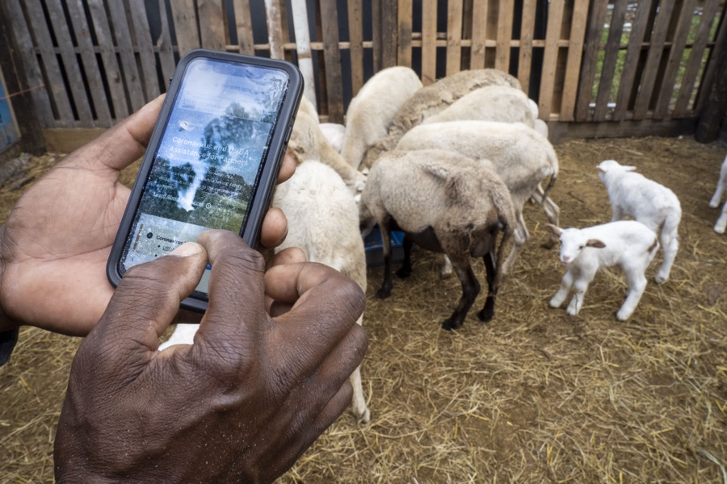
03Cerrar brechas culturales
04Resolver retos de sostenibilidad
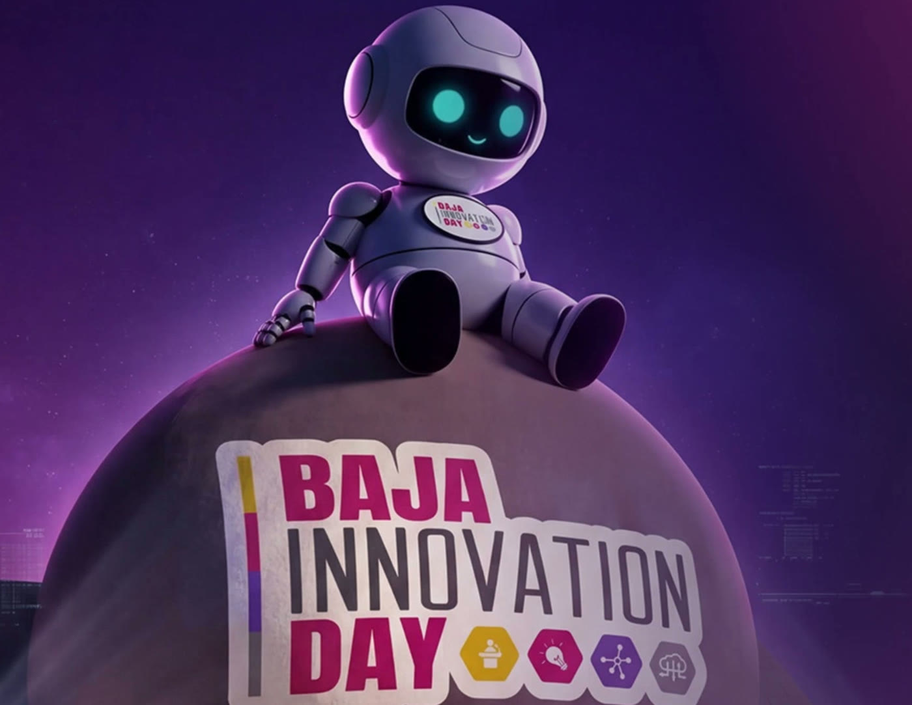
“La barrera más fuerte no es técnica, sino cultural.”
Sobre la adopción de tecnología en el sector ganadero
Impulsan
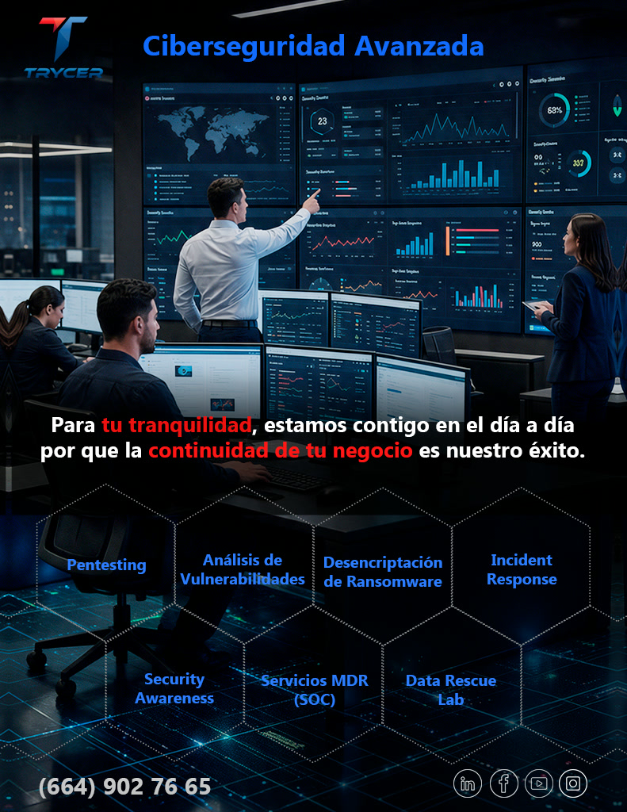
Andrés WongLead Developer, Enteracloud Socio fundador, Purple AI
Catorce años invisible.
La IA encontró el agujero. Los atacantes llegaron primero.
Ciberseguridad e IA
Ciberseguridad e IACatorce años invisible · Andrés Wong
El 21 de octubre, PHP y Node.js publicaron parches de emergencia. Ocho días después, Binance confirmó el robo de 6,300 millones de dólares, el mayor de la historia cripto. En casi toda la cobertura aparece la misma explicación: inteligencia artificial. Es cierta a medias, y la mitad que falta es la más importante.
El bug que llevaba catorce años
Las fallas de PHP permiten que alguien sin usuario ni contraseña ejecute código en tu servidor, en todas las versiones desde la 5.4: el 70% de internet y más de 22 millones de instalaciones expuestas. Ese agujero llevaba catorce años ahí, en uno de los programas más auditados del planeta. En agosto lo encontraron dos equipos por separado, ambos apoyados en modelos de IA.
No es casualidad: cambió el instrumento.
Ciberseguridad e IACatorce años invisible · Andrés Wong
La IA no cambió quién gana. Cambió cuánto dura la ventana.
Los detalles se filtraron un día antes de lo acordado y siguieron millones de intentos de ataque. Antes pasaban semanas entre que una falla se hacía pública y alguien construía un ataque: ese era el tiempo para actualizar. Esa fricción se acabó, y al atacante le basta un servidor sin parchear entre veintidós millones.
6,300 millones, y ni un solo modelo de IA
En la cobertura del robo a Binance no hay un solo reporte que ponga a la IA en el camino del ataque. Según la investigación preliminar, el atacante entró por la laptop de un ingeniero al que convencieron de correr una “prueba”. La empresa aclaró que no fue el único punto de entrada; la historia sigue abierta. Pero el eje ya se ve: el perímetro técnico se endurece como nunca, y el robo más grande necesitó una persona dispuesta a hacerle un favor a un desconocido.
Cronología de octubre
Agosto 2026Dos equipos encuentran el bugCada uno con un modelo de IA, con semanas de diferencia.
21 de octubrePHP y Node parcheanFallas que permiten ejecutar código sin contraseña.
El mismo díaLos detalles se filtranLa ventaja cambia de bando: millones de intentos de ataque.
29 y 30 de octubre6,300 M robados, sin IAEntraron por la laptop de un ingeniero.
14años escondido el bug de PHP
22 Minstalaciones expuestas
6,300 Mdólares robados a Binance
Ciberseguridad e IACatorce años invisible · Andrés Wong
Ahora los robots tienen las llaves
Octubre también trajo ataques a la cadena de suministro: librerías contaminadas, incluida LiteLLM, y un gusano que roba credenciales de desarrollo y de la nube. Es un ataque contra la forma en que hoy se trabaja con agentes de IA. En mi laptop corren agentes con memoria, herramientas y credenciales: muy productivo y, visto desde el otro lado, un objetivo precioso.
Si en tu empresa alguien ya usa agentes conectados a sistemas reales, la pregunta de esta semana es: ¿qué llaves tienen, y qué pasa si alguien se las queda?
La oficina de agentes de Andrés Wong
0127agentes de IA
0210departamentos
034máquinas
La IA nos está dando defensas que no teníamos y velocidades que no sabemos manejar.
Andrés Wong · Lead Developer, Enteracloud · Socio fundador, Purple AI
Ciberseguridad e IACatorce años invisible · Andrés Wong
La IA no rompió internet. La abrió en canal.
La lectura fácil de octubre es que la inteligencia artificial rompió internet. Es falsa. Lo que pasó es que abrió en canal una infraestructura que llevaba años con heridas que nadie veía, y lo hizo del lado correcto: los dos agujeros grandes del mes los encontraron investigadores usando modelos, no criminales.
El balance
El precio de ese regalo es que se acabó el tiempo muerto. Lo que antes tardaba semanas en volverse un ataque funcional ahora tarda días, y tu plan de actualización todavía está escrito para el mundo anterior.
Y la coda, la que yo me llevo: mientras el perímetro corre a esa velocidad, el robo más grande que se ha visto entró por una laptop y una conversación.
La coda
Lo que no nos está dando, y no nos va a dar, es gente que desconfíe a tiempo.
Andrés Wong · Lead Developer, Enteracloud · Socio fundador, Purple AI
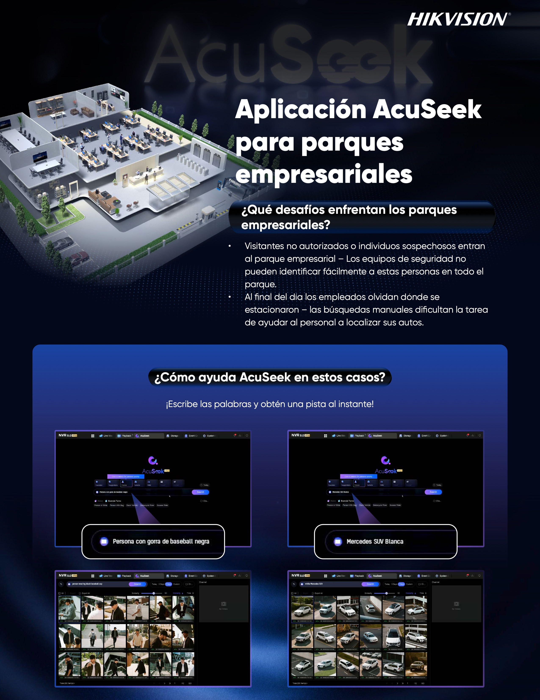
Construyendo el ecosistema.
Tecnología en Baja California: el conocimiento existe, la conexión es el desafío.
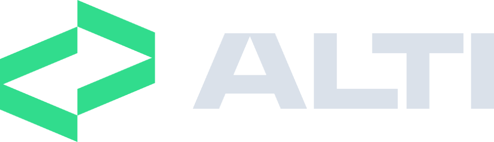
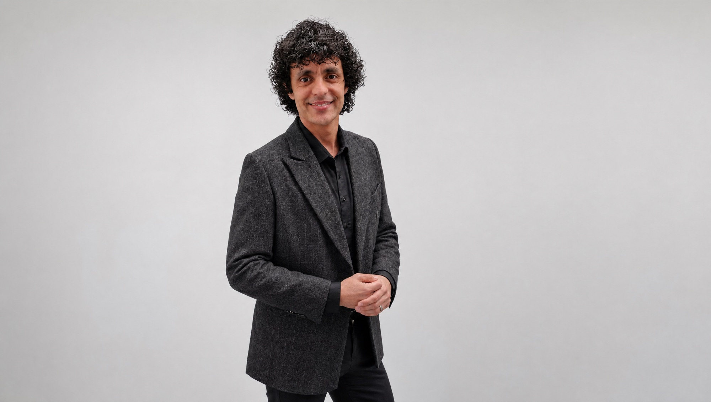
Christian PicosHospital Excel Director de ALTI
Comunidad
ComunidadConstruyendo el ecosistema · Christian Picos
Hay una pregunta que vale la pena hacernos como líderes de tecnología e innovación: ¿qué podríamos lograr si dejáramos de enfrentar nuestros desafíos por separado y comenzáramos a construir soluciones en conjunto?
De un foro a una alianza
En julio de 2025 asistí al Foro de Tecnología MX para convivir con personas de mi entorno profesional, intercambiar experiencias y conocer proveedores. Encontré cientos de personas hablando de tecnología, proyectos y negocios, y entendí el valor de reunirnos con quienes comprenden nuestros desafíos.
Meses después recibí la invitación para participar en la Alianza de Líderes de Tecnología e Innovación (ALTI). No llegué porque tuviera todas las respuestas, sino porque reconocí una iniciativa que podía ayudarnos a encontrarlas juntos.
El conocimiento existe. La conexión es el desafío.
ComunidadConstruyendo el ecosistema · Christian Picos
Más allá de la herramienta
Hay problemas que no se resuelven con una búsqueda en internet.
Muchas preguntas encuentran respuesta en la documentación, los cursos o las comunidades técnicas. Hoy, además, la inteligencia artificial nos ayuda a investigar, programar y analizar información en minutos. Pero llega un momento en que el problema deja de ser exclusivamente técnico.
En el sector privado de la salud he comprendido que algunos problemas implican entender procesos, proteger información confidencial, evaluar riesgos, coordinar equipos y tomar decisiones que afectan la operación. Ninguna tecnología, por sí sola, garantiza que una organización funcione mejor. La verdadera transformación comienza cuando entendemos el problema que necesitamos resolver.
Eso requiere líderes que conversen con la dirección, colaboren con las áreas operativas y traduzcan los desafíos en soluciones con sentido. Una comunidad de líderes permite que esas experiencias se encuentren y se complementen.
Lo que impulsa ALTI
Cada mes · en líneaMENTOR ALTIEncuentros virtuales para compartir experiencias y perspectivas sobre los temas que transforman la profesión.
Durante el añoEventos presencialesPara encontrarnos, ampliar redes de colaboración y construir relaciones de confianza.
SiempreConversaciones honestasSobre lo que funciona, lo que no y lo que todavía no sabemos resolver, sin competir.
ComunidadConstruyendo el ecosistema · Christian Picos
Una construcción colectiva
ALTI no pertenece a una sola voz.
Su identidad, crecimiento e impacto dependerán de quienes decidan participar, aportar sus conocimientos y escuchar otras perspectivas. Como director, asumo la responsabilidad de contribuir a que esta visión se convierta en realidad. Uno de los grandes retos del liderazgo tecnológico es reconocer que nadie domina todas las especialidades.
01Un líder
puede tener una trayectoria extraordinaria y, aun así, necesitar ayuda ante un problema nuevo.
02Un ingeniero
puede dominar su especialidad y beneficiarse de quien conoce mejor el negocio.
03Quien apenas comienza
puede aportar preguntas que cuestionen prácticas que todos daban por sentadas.
Mi decisión nace de algo personal: experimenté el valor de encontrar una comunidad con la que compartir mi realidad profesional. Sé la diferencia que hace una conversación con alguien que entiende el contexto y está dispuesto a ayudarte a pensar mejor.
Quiero que más profesionales de la región tengan esa oportunidad. Que dentro de cinco años podamos reconocer que esta alianza ayudó a cambiar nuestra manera de pensar, de liderar y de resolver problemas.
No necesitamos pensar igual para colaborar.
Christian Picos · Construyendo el ecosistema
01Primera sesión Mentor ALTI
Alfredo SánchezSenior Business Developer IA Mentor de la primera sesión
Resolver mejor.
Inteligencia artificial: el futuro de los profesionales de tecnología no está en programar más.
Mentor ALTIResolver mejor · Primera sesión
La inteligencia artificial está redefiniendo cómo operan las empresas y cómo trabajan los profesionales de tecnología. Más allá de la automatización, el verdadero reto está en identificar problemas, proponer soluciones y conectar la tecnología con las necesidades reales del negocio.
Ese fue el tema central de la primera sesión de Mentor ALTI, el espacio de la Alianza de Líderes de Tecnología e Innovación donde líderes y profesionales comparten experiencias sobre la evolución de la industria.
La abrió Alfredo Sánchez, con más de 30 años en el sector tecnológico, quien compartió las lecciones que han marcado su carrera y su visión sobre el impacto de la IA en las empresas.
Alfredo SánchezPrimera sesión de Mentor ALTI
30+años en tecnología
35desarrolladores en su equipo
3prácticas de liderazgo
Mentor ALTIResolver mejor · Primera sesión
La IA no sustituye al profesional: le cambia el papel.
Ya hay herramientas que generan código a partir de indicaciones, así que el trabajo de solo ejecutar instrucciones cambia. El conocimiento técnico sigue siendo necesario, pero el profesional debe analizar, cuestionar, proponer y ofrecer soluciones. Surgen perfiles nuevos: Alfredo hoy acompaña a ventas como especialista en innovación e IA.
Su carrera creció cuando dejó de trabajar solo desde sistemas y se involucró con finanzas, recursos humanos y operaciones. Antes de desarrollar, hay que entender qué necesita el usuario: TI debe ser aliado estratégico del negocio, no solo atender solicitudes.
Habilidades que ganan peso
Pensamiento críticoCreatividadComunicaciónLiderazgoResolución de problemasTrabajo con IA
Implementar IA
Contexto, seguridad y supervisión humana.
A la IA hay que darle contexto: el proceso, los objetivos y la información relevante. El riesgo mayor es confiar ciegamente en sus resultados: un reporte financiero con menos pérdidas de las reales se traduce en malas decisiones.
Por eso hay que verificar y mantener supervisión humana, sobre todo en finanzas y estrategia, y proteger los datos corporativos desde la planeación.
01Soluciones empresariales
Con contratos y acuerdos de confidencialidad.
02IA local
Modelos dentro de la empresa, como los basados en Ollama.
03Gobernanza
Políticas y permisos sobre cómo y para qué usarla.
Mentor ALTIResolver mejor · Primera sesión
5 TBde almacenamiento, como mínimo de referencia para una IA local
Lo interesante son los datos, no el proceso.
Alfredo Sánchez · Mentor ALTI
Liderazgo
Tres prácticas que marcaron su carrera.
01
Involucrarse con otras áreas
Comprender las necesidades de los equipos y colaborar.
02
Invertir tiempo en las personas
Seleccionar talento por sus habilidades prácticas, no solo por un título.
03
Fomentar la innovación
Dejar que el equipo proponga y construya soluciones.
Lo que haría diferente: comunicar y vender mejor las soluciones de su equipo a otras áreas y a la dirección. No basta con una buena solución; hay que saber contar su valor.
La transformación digital depende de profesionales que conecten la tecnología con las personas. Mentor ALTI quiere sumar mentores y acercar estas experiencias a estudiantes.
La IA llegó para quedarse; el diferenciador seguirá siendo la capacidad humana de resolver.
Mentor ALTI · Primera sesión
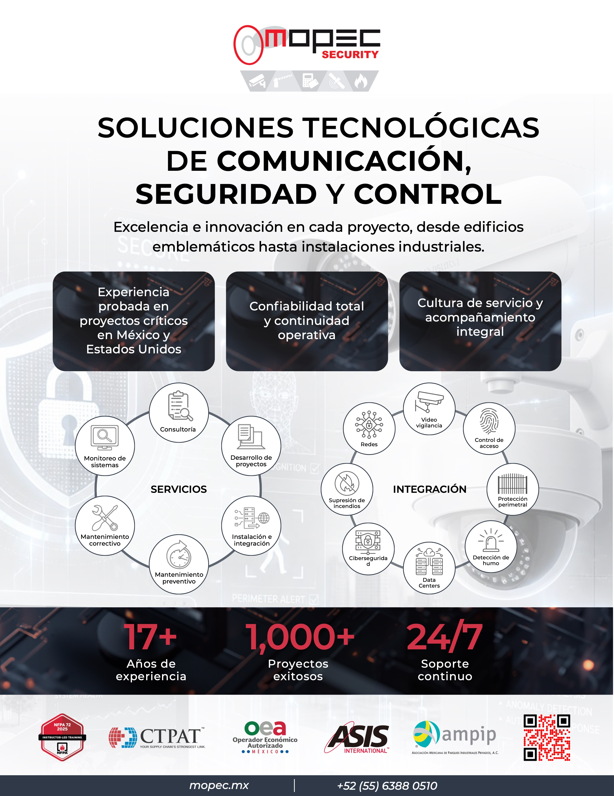
En esta ediciónColaboradores
Las voces de noviembre
Quién escribe.
Cinco líderes de la comunidad tecnológica comparten lo que están viendo, aprendiendo y construyendo.
01
Josué Madera
Fundador y Director Editorial de Hablemos Tech. Director General de EnteraCloud y cofundador de Purple AI.
Carta del fundador · p. 03
02
Francisco Olazo
LATAM Lead Engineer de Enteracloud.
Octubre negro · p. 08
03
Andrés Wong
Lead Developer de Enteracloud y socio fundador de Purple AI.
Catorce años invisible · p. 15
04
Christian Picos
Hospital Excel. Director de ALTI, Alianza de Líderes en Tecnología e Innovación.
Construyendo el ecosistema · p. 21
05
Alfredo Sánchez
Senior Business Developer IA, con más de 30 años en el sector tecnológico. Mentor de la primera sesión de Mentor ALTI.
Resolver mejor · p. 25
Próxima edición
Esta revista es de ustedes: escríbenos.
Comparte un caso, una lección o una pregunta con la comunidad.
Vol. 03 · Noviembre 2026hablemostech.com
Vol. 03 · Hasta la próxima edición
Gracias por leer.
Hacemos esta revista para quienes mantienen la tecnología de su empresa funcionando todos los días. Ojalá te lleves al menos una idea útil para tu próxima semana.
¿Resolviste algo que a otros les ahorraría horas de trabajo? Cuéntanoslo: la próxima edición también puede llevar tu firma.
Scroll para acercar · con el click sostenido mueves la páginaDesliza la página para avanzar
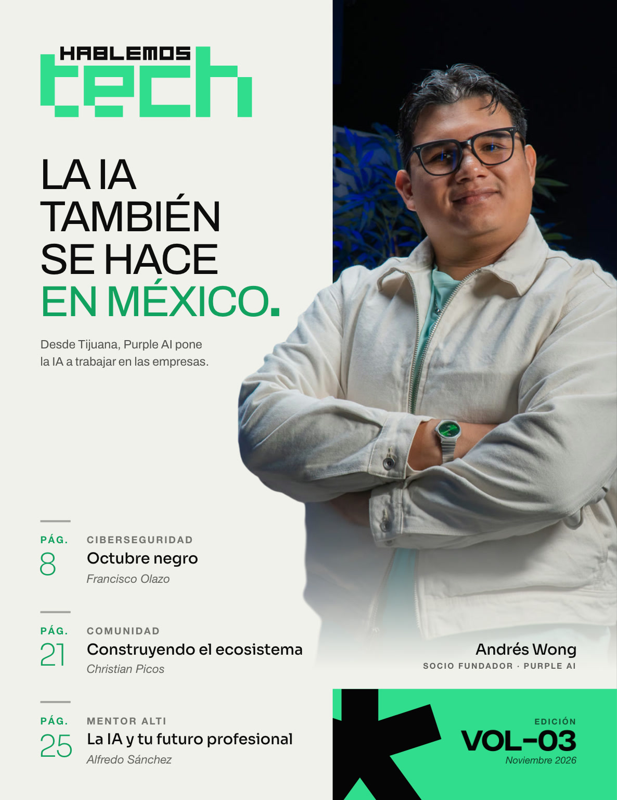
Nueva edición/Noviembre 2026
Edición Noviembre 2026
Seis piezas sobre comunidad, ciberseguridad e inteligencia artificial, en 30 páginas.
Verificando tu acceso…
Regístrate gratis para leer la edición completa. Con correo corporativo el acceso es inmediato.